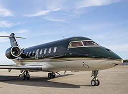
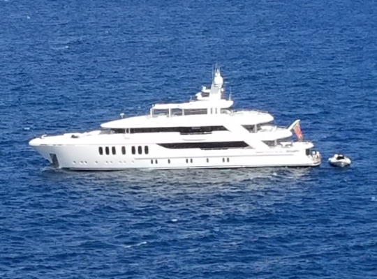
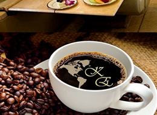
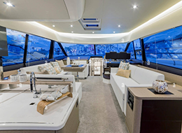
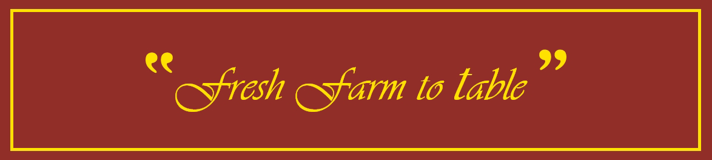

Our "KonaElite" Kona coffee is custom roasted every order for the freshest taste in the industry. Kona coffee is highly prized throughout the world for its full bodied flavour and pleasing aroma.
Coffee trees thrive on the cool slopes of the Hualalai and Mauna Loa mountains in rich volcanic soil and afternoon cloud cover. Growing in this unique environment.
Kona Coffee has a distinct advantage over coffees grown in other parts of the World. Coffee trees typically bloom after Kona's dry winters and are Harvested in Autumn. Coffee cultivated in the North and South Districts of Kona on the big island of Hawaii is the only coffee that can truly be called "Kona Coffee". So enjoy the most "Peaceful" taste experience every "KonaElite"